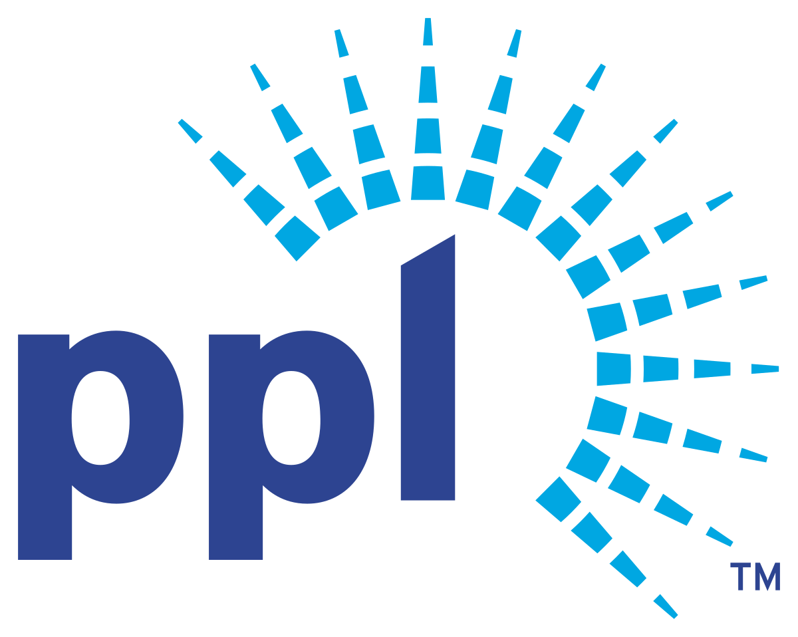

B.S. in Computer Engineering from Lehigh University
The required courses for this degree include the fundamentals of electronic circuits,
signal theory, logic design, computer architecture, digital systems, structured programming, data structures,
software engineering, operating systems, and discrete mathematics.

M.S. in Electrical Engineering from University of Southern California - In Progress
Coures Completed: EE-508 Nano-Fabrication Lithography, EE-504L Solid State Processing and Integrated Circuits Laboratory,
EE-479 Analog Integrated Circuit Design, EE-537 Modern Solid-State Devices, EE-549 Nanotechnology for Materials, Electronics, and Circuits

PPL Electric Utilities
During my time at PPL I worked in the distribution operations center. I had three different jobs over the course of my internship.
My first job was to use Python and Django to create a web service. The service pulled raw data from distribution centers across the
PPL territory. The data was cleaned and presented in a way that allowed the user to see large scale trends across the territory.
The second job was to work with IOT team to assess the feasibility and necessity of placing IOT sensors in various distribution boxes
(the large grey boxes seen on some utility poles) across the territory. The last role was to work with distributions
operation operators to learn the general operations they perform in daily tasks. Using the information, I learned I
created a program to automated testing scenarios for incoming operators.
Exscribe
Working with two other interns we first created a way for users to fill out medical questionnaire forms safely and securely online.
We began by constructing a backend scheme using C#. The backend needed to store incoming data synchronously and interface with preexisting
code to pull previously entered user data. To reduce the size of the forms we had to develop an algorithm that look at prior medical history
and the type of operation to only ask pertinent questions. We then developed a user interface that would work on all devices.
iD Tech Camps
Taught courses in Cryptography and Cyber security and Intro to Game Design to high school and middle school students.
The Cryptography and Cyber security course contained basic encryption and decryption, using python to create various
programs to further protect the ciphertext while it is in transit, and how to analyze small programs for security.
The Intro to Game used Construct 2 and RPG Maker to introduce the basic concepts of game design and allow students to
create a fully functioning game by the end of the course.
Kapadia lab - Laboratory for Photons, Electrons and Materials
I work on materials growth of III-V semiconductor devices using templated liquid phase growth and MOCVD.
My current research involves using transistors fabricated by the lab to produce neuromorphic computing arrays.
These arrays can be used to emulate artificial neural networks and are more efficient than traditional von-Neumann methods.
The transistors use charge trapping to modulate and store conductance’s.
The conductance's of a transistor in the array are analogous to individual weights in a traditional neural network.
By varying the conductance's in the array one can achieve a hardware implementation of a neural network.
Cheng lab - Laboratory Of Networking Group
In Dr. Cheng’s lab I worked with code that can be used to secure programable logic controllers (PLCs) at the firmware level.
Attackers waning to disrupt a resource can easily can code being sent to PLCs. By storing legitimate runtime behavior in the
firmware of each PLC most types of nondestructive attacks can be mitigated. Once the general firmware had been written I worked
on documenting the setup and procedures needed to place the ladder logic code into PLCs.
Miwa lab - The Lynx Lab
In Dr. Miwa's neuroscience lab, I worked on a wide variety of projects. I developed a website to secure participants for a study on the effects of lynx gene mutations.
I learned PCR and gel electrophoresis to analyze saliva samples collected from the participants of the study.
I computerized the study to allow for the test to be administered online, as well as, as helping to administer the study.
I ran statistical analysis on results received from study to determine the effect of mutations on participants behavior.
Lasty, I worked on developing 3D models of the mutated gene to see potential effects of the mutations discovered in participants.